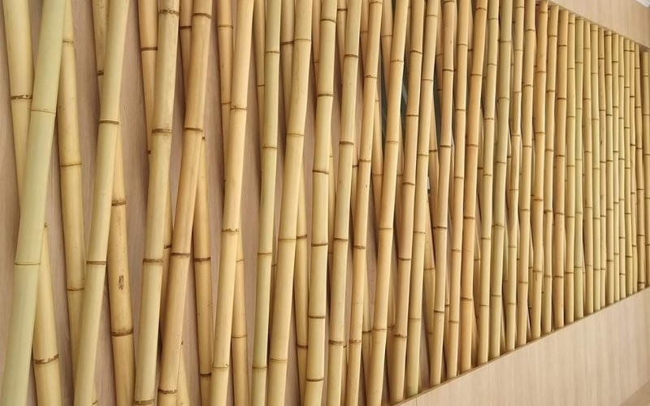
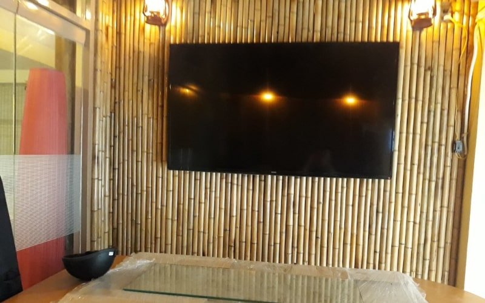
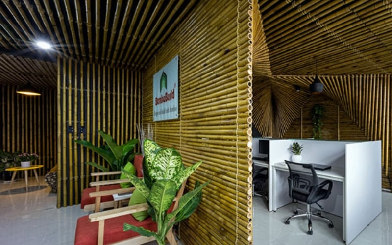
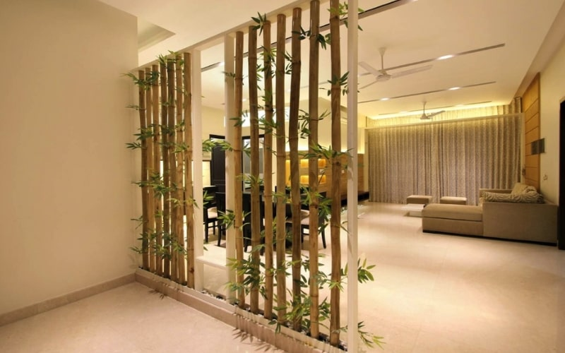

Vách ngăn tre trúc trong lĩnh vực kiến trúc và xây dựng, việc sử dụng tre trúc để làm vách ngăn đang trở thành một xu hướng mới. Sản phẩm này mang đến không gian sống tự nhiên, đậm chất “quê hương” quý khách có nhu cầu đừng bỏ lỡ bài viết này nhé.
Vách ngăn tre trúc thích hợp cho các loại công trình nào?
Vách ngăn tre trúc được tạo ra từ nguyên liệu tự nhiên và có màu sắc tự nhiên, tinh tế và dễ dàng phối hợp với các món đồ nội thất khác. Vì vậy, làm vách ngăn bằng tre trúc trang trí phù hợp với hầu hết các không gian, từ phong cách đơn giản cho đến sang trọng.
Do đó, Vách ngăn tre trúc được sử dụng cho nhiều loại công trình khác nhau, chẳng hạn như: nhà riêng, khách sạn, quán cà phê, nhà hàng, khu nghỉ dưỡng, resort, cửa hàng sách, và nhiều hơn nữa.
Tại sao nên làm vách ngăn bằng tre trúc

Sản phẩm được làm vách ngăn bằng tre trúc được sử dụng rộng rãi từ xa xưa bởi ông cha ta. Hiện nay, làm vách ngăn bằng tre trúc phổ biến trong kiến trúc hiện đại cũng như truyền thống, phong cách nội thất bằng tre trúc được khai thác triệt để, đặc biệt là làm vách ngăn bằng tre trúc.
Sản phẩm này có nhiều ưu điểm nổi bật như sau:
Độ bền tốt
Làm vách ngăn bằng tre trúc có độ cứng cao gấp đôi đến ba lần so với các loại cây gỗ thông thường, độ bền kéo của nó gấp 6 lần thép và sức chịu lực nén tốt hơn nhiều so với bê tông.
Độ đàn hồi của vách ngăn tre trúc cũng được đánh giá cao, cho phép dễ dàng uốn cong và tạo hình theo từng đặc điểm của công trình.
Giá thành rẻ
Tre trúc là loại cây sinh trưởng nhanh và có thời gian tái sinh rất nhanh, chỉ mất khoảng 3-5 năm để trồng và thu hoạch nguyên liệu. Do đó, giá bán nguyên liệu tre trúc rẻ hơn rất nhiều so với các vật liệu khác, phù hợp với mọi đối tượng khách hàng.
Gần gũi với thiên nhiên
Tre trúc được coi là biểu tượng của người Việt, mang đến cảm giác gần gũi với thiên nhiên. Sự xuất hiện của rặng tre luôn đem lại cho chúng ta cảm giác được hòa mình vào với thiên nhiên, mang lại sự dễ chịu và thư thái đến lạ kỳ.
Thân thiện với môi trường
Tre trúc là một vật liệu tự nhiên không hấp thụ nhiệt lượng và không thải ra khí độc trong quá trình sử dụng.
Vậy nên làm vách ngăn bằng tre trúc được đánh giá cao về tính an toàn với sức khỏe người dùng và thân thiện với môi trường sống của con người.
Hướng dẫn cách làm vách ngăn bằng tre trúc đơn giản
Chuẩn bị vật liệu

Để có được công trình vách ngăn tre trúc có độ bền cao và giàu giá trị thẩm mỹ. Mọi người cần chuẩn bị đầy đủ các nguyên vật liệu sau:
- Nguyên liệu tre trúc: Có thể là cây tre khô, trúc khô, lồ ô khô hoặc cây tầm vông khô,… Miễn sao bạn cảm thấy thích và thuận tiện cho việc tìm kiếm, chuẩn bị. Nhưng vật liệu cần đảm bảo về độ thẳng, đạt tiêu chuẩn về độ cứng, bề mặt sáng bóng, các lóng tre đều nhau và đã được xử lý mối mọt kỹ lưỡng.
- Máy móc, dụng cụ cần thiết: Máy khoan, búa, máy hàn, máy cắt, máy bắn đinh, dây thép, thước đo, kéo, cưa, keo dán,…
- Nhân công: 2 – 3 người tùy theo quy mô công trình cần thi công.
Xem thêm: Trần nhà bằng tre trúc
Hướng dẫn đơn giản để làm vách ngăn bằng tre trúc
Bước 1: Chuẩn bị vật liệu
Để làm làm vách ngăn bằng tre trúc đẹp và bền vững, bạn cần chuẩn bị đầy đủ các vật liệu sau đây:
- Nguyên liệu tre trúc: Có thể sử dụng cây tre khô, trúc khô, lồ ô khô hoặc cây tầm vông khô tuy nhiên cần đảm bảo độ thẳng, độ cứng và bề mặt sáng bóng. Các lóng tre cần đều nhau và đã được xử lý mối mọt kỹ lưỡng.
- Máy móc và dụng cụ cần thiết: Máy khoan, búa, máy hàn, máy cắt, máy bắn đinh, dây thép, thước đo, kéo, cưa, keo dán,…
- Nhân công: Tùy thuộc vào quy mô của công trình, bạn cần từ 2 đến 3 người để thực hiện.
Bước 2: Thực hiện công việc
Sau khi đã chuẩn bị đầy đủ vật liệu và dụng cụ, bạn có thể bắt đầu thực hiện công việc vách ngăn tre trúc. Trong quá trình thực hiện, bạn cần tuân thủ các bước sau:
- Đo và cắt tre trúc theo kích thước và số lượng cần thiết.
- Sử dụng máy khoan để khoan lỗ trên các thanh tre trúc.
- Kết nối các thanh tre trúc bằng dây thép và bắn đinh.
- Sử dụng keo dán để bảo vệ và tăng độ bền cho vách ngăn.
Với các bước trên, bạn có thể dễ dàng tạo ra một vách ngăn tre trúc đẹp và bền vững.
Một số mẫu vách ngăn bằng tre trúc đẹp và độc đáo
Vách ngăn tre trúc là một lựa chọn tuyệt vời để tăng cường tính thẩm mỹ và tạo điểm nhấn cho không gian. Đây là một phong cách trang trí được ưa chuộng trong thời đại hiện đại. Nếu bạn đang tìm kiếm ý tưởng, hãy xem qua các mẫu vách ngăn bằng tre trúc độc đáo và mới lạ dưới đây.

Để thực hiện dễ dàng, bạn có thể chọn giữa các loại hàng rào tre trúc dạng tấm hoặc dạng cuộn đã được gia công sẵn. Sử dụng loại này không chỉ đẹp mà còn tiết kiệm thời gian và công sức.

Chỉ với vài bước đơn giản, chúng ta có thể biến không gian tẻ nhạt và đơn điệu thành những công trình đẹp, độc đáo và ấn tượng. Hãy bắt tay vào hiện thực hóa ý tưởng của mình ngay hôm nay để cảm thấy cuộc sống thú vị hơn và tâm hồn thoải mái hơn. Nếu bạn cần hỗ trợ hoặc có bất kỳ thắc mắc nào về cách làm vách ngăn bằng tre trúc, hãy liên hệ với Tre Việt Building để được tư vấn hoàn toàn miễn phí qua hotline:093.123.5757
CÔNG TY TRÁCH NHIỆM HỮU HẠN TRE VIỆT BUILDING
Địa chỉ: 917 Phạm Văn Đồng, Phường Linh Xuân, Thành phố Hồ Chí Minh
Nhà máy sản xuất: Phú Hợp B, Xã Phú Lâm, Đồng Nai.
Điện thoại – Zalo: 093.123.5757
Email: info@treviet.com.vn – treviet23@gmail.com